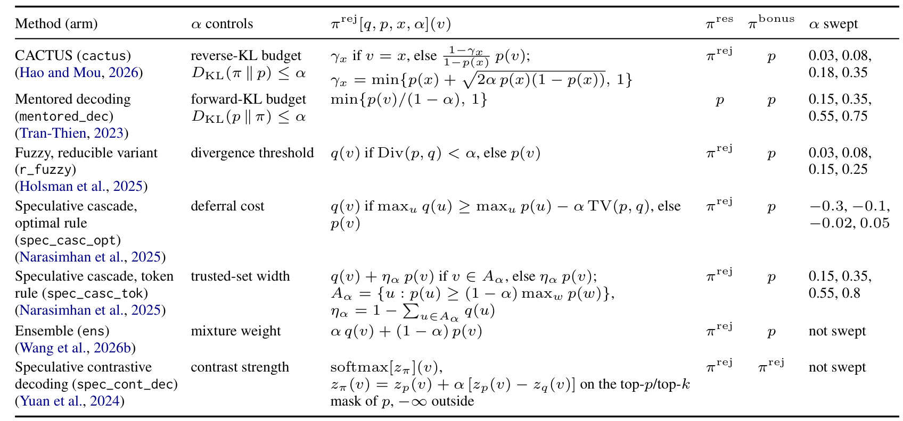
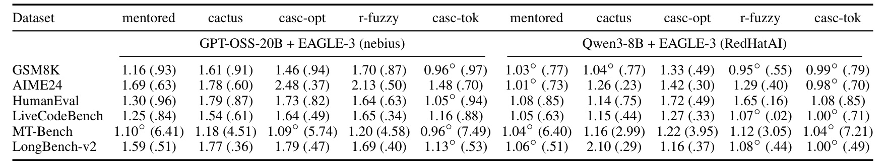
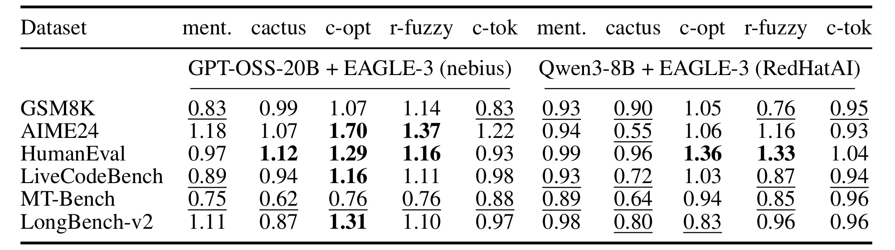
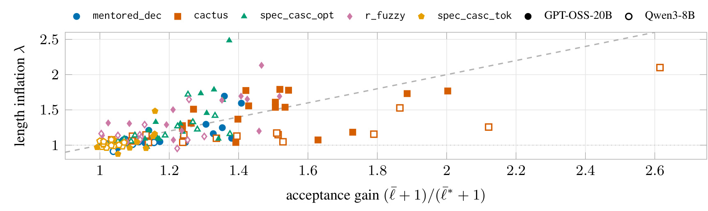
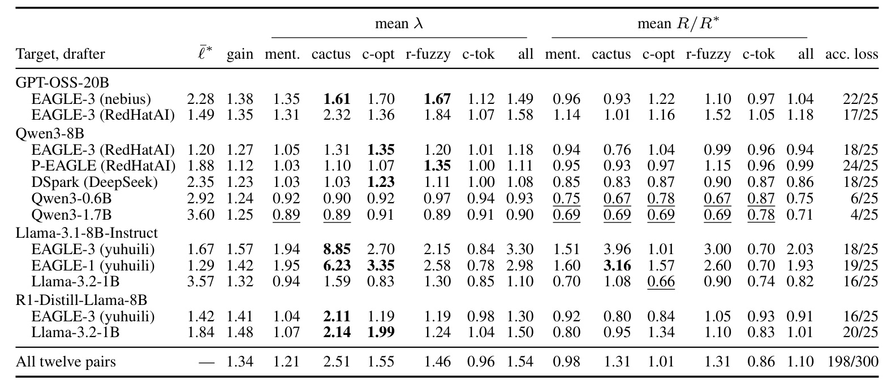
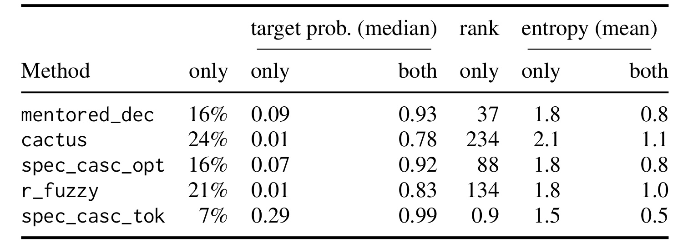
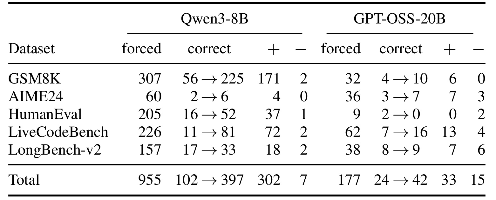
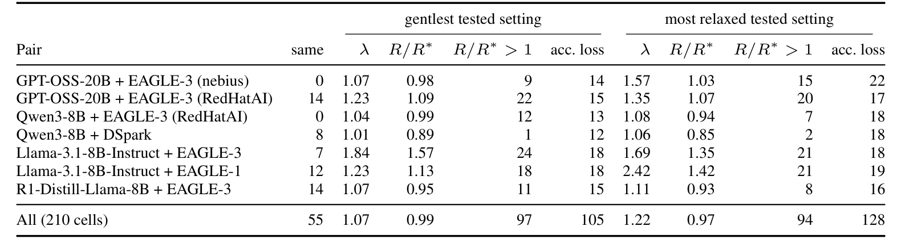

Acceptance Is Not Speed：宽松投机解码中的长度膨胀
论文：Acceptance Is Not Speed: Length Inflation in Training-Free Lossy Speculative Decoding。作者 Chiatzen Wang、Bill Xu、Haochen Gu、Hongyang Zhang，第一作者主机构为滑铁卢大学。公开版本为 2026 年 10 月 16 日 arXiv v1，阅读核验日期为 2026 年 10 月 20 日。本文属于大模型推理效率与评测研究，未核验到已接收会议。唯一论文入口：arXiv 摘要与版本记录。论文披露匿名实验仓库，但本轮未独立核验其代码内容及可运行性。
1. 背景和问题
放宽验证会让完成文本变长，主要延长推理过程，从而大幅抵消每轮接受更多草稿词元带来的表面增益；只看每轮接受量无法可靠判断真正的解码速度。
理解这项研究，首先要区分“快速写出下一段文字”和“快速完成同一个请求”。自回归模型通常每生成一个词元都要调用一次大模型。投机解码让便宜的草稿器先提出多个词元，再让目标模型一次并行验证多个位置。如果一段草稿大部分被接受，大模型的每次前向计算就可以提交多个词元。因此，平均每轮接受多少草稿词元，长期被用于判断草稿器是否有效。这套逻辑在输出分布保持不变时相当自然：对于同一任务，生成长度的期望不变，提高每次计算的有效产出通常就能减少总计算。
严格验证的关键承诺是采样分布不变。草稿器即使偶尔提出不符合目标模型的词元，拒绝采样和残差补采样也会修正它。使用足够多的请求比较时，输出的统计性质应当与目标模型直接采样一致，包括何时停止、怎样组织答案以及预期完成长度。这里并不是说每个请求在两个随机采样分支上都会生成同样长的文本，而是分布层面的保证。在这种前提下，用接受长度作为效率代理有理论支撑。宽松验证则主动放弃这个保证，用更容易通过的准则接受草稿，追求更高吞吐。其影响同时进入“每轮能写多少”和“总共要写多少”两个变量。
本文指出，第二个变量在既有评测中经常被弱化。某个规则可能把原本需要拒绝的词元纳入上下文，这会改变后续所有生成条件。它不仅影响当前词元是否正确，还可能让模型进入更冗长的思考、重复论证、重开已经结束的思考块，乃至在生成预算耗尽时仍未输出最终答案。此时每秒生成词元数可以提高，每轮接受量也可以提高，但用户等待一个可用答案的时间却没有改善。若错误地把更长的中间过程全部算作有效产出，就会把生成行为的变化混在系统加速里。论文因此以请求为单位报告长度、验证轮数、客户端墙钟时间和任务准确率。
这并非一篇提出新草稿器或训练新验证头的论文。作者选择五种无需额外训练、在词元级放宽验证的既有规则，搭建统一比较框架，研究它们产生的文本发生了什么变化。这个范围很重要：EAGLE 等专用草稿头本身可能经过训练，“免训练”指此次替换验证规则不需要再学习一个组件，并不意味着整套模型从未训练。需要训练判别头或者学习混合权重的方法不属于本次五规则扫描的主要对象。研究贡献主要是计量口径、跨设置证据和失败路径诊断，读者不应寻找一套新的损失函数或声称本文已经给出了普遍有效的解码器。
作者进一步区分专用草稿器与独立小模型。前者输入目标模型的隐藏状态，通常与特定目标检查点绑定；后者只根据词元上下文生成候选，要求与目标共享分词器，但本身是一套可独立运行的小语言模型。这一区分避免把所有便宜草稿混为一谈。相同目标模型搭配不同草稿器，宽松验证的长度变化可能很大；只有测量其共同采样分布与结束行为，才能判断放宽验证是否值得。尤其当草稿器会系统性高估目标不喜欢的词元时，放宽准则可能反复把这种偏差写入上下文。
推理模型让该问题更显著，因为其思考过程可以长达数千词元，而最终答案可能很短。若额外长度主要位于分析通道，表面上丰富的输出并不一定增加任务信息；若推理持续到预算边缘，模型可能已经算出正确答案却没有机会按要求提交它。另一方面，非推理模型也可能膨胀，论文中 Llama-3.1-8B-Instruct 的某些专用草稿器组合就有明显增长，因此不能把现象直接等同于思考标签错误。本文将思考与最终答案分开检查，是为了区分膨胀具体发生在哪个输出阶段，而不是预设所有模型都具有相同的内部结构。
对大模型工程读者，最有价值的问题是：一项提高接受率的改动，是否仍然缩短了完成有用任务所需的总时间？对生成式推荐、自然语言重排解释和内容理解服务，同一问题会体现为结果列表是否按时结束、结构化答案是否完整，以及重复解释是否挤占预算。本文没有直接做推荐线上实验，因此这些只是评测设计的迁移方向。尤其不能拿六个通用任务上的长度趋势直接估算推荐服务延迟收益。可迁移的是固定请求集合、同时看质量和完成成本的比较方法，具体生成长度和终止规则还必须在业务输出格式上重新验证。
从证据强度看，摘要的 1.34 倍接受增益与 1.54 倍长度增长属于最宽松已测试设置上的跨实验格汇总。它们提示存在严重抵消，却不是一个实际服务整体变慢百分比的直接测量。每格包含的任务、长度分布与草稿器都不同，不能把两个总平均数简单相除后就称为系统速度。作者还安排温和设置、采样温度、多随机种子和硬件对照，检验结论是否只是某个极端超参数造成。阅读本文需要始终保留这些层次：机制公式提供条件判断，逐格实验观察现象，墙钟计时才回答特定部署环境中的真实延迟。
现有工作也不是完全没注意过冗长输出。作者在相关工作对照中承认，前序研究讨论过弱草稿器带来的啰嗦回答，也有人已经提出长度修正项。本文推进的是将长度膨胀作为主要测量对象，系统比较不同规则、任务和草稿器，并把额外文本放到生成轨迹里检查。因此其新意应定位为系统性证据和诊断深度，而非声称首次想到输出长度会影响时间。这个定位有助于解释为什么论文没有新的学习架构，却仍能对评价推理优化的方法产生实际影响。
2. 方法
2.1 严格验证与单轮成本
设目标模型给出的下一词元分布为 $p$，草稿模型为 $q$。每轮先由草稿器顺序采样固定长度的候选块，再由目标模型对整个块以及后续位置并行评分。草稿词元 $x$ 以 $\min\{1,p(x)/q(x)\}$ 的概率接受；一旦拒绝，就从非负残差 $\operatorname{norm}(\max(0,p-q))$ 中重采样该位置，并结束这一轮。若候选块全部接受，还会在块后额外采样一个奖励词元。无论出现拒绝还是全部通过，一轮的平均提交量均是平均接受草稿数再加一。后面的成本核算必须保留这个加一项，否则低接受长度草稿器的相对收益会被夸大。
符号解释：$S$ 是相对目标逐词元生成的近似加速倍数；$\bar\ell$ 是每轮平均接受草稿数；$N_{\mathrm{draft}}$ 是草稿块长；三个 $C$ 分别表示目标单步、草稿单步与整块验证的时间；$c_{\mathrm{rel}}=C_{\mathrm{drafter}}/C_{\mathrm{AR}}$。第二个近似依赖验证阶段接近内存带宽约束，整块验证时间约等于目标单步。若批量、内核、序列长度或调度使验证成本变化，就需要实测修正。
符号解释：$v$ 遍历词表，$\operatorname{TV}$ 是两个下一词元分布的总变差距离。该式描述从草稿分布采样一个词元时，严格验证的平均接受概率，体现草稿与目标分布重叠的上限。它并不直接给出整个块的接受长度，因为后续位置是否被走到取决于前缀是否已经拒绝。宽松方法试图突破这个重叠约束，代价是输出不再严格遵守目标分布。
2.2 长度修正和盈亏阈值
作者把验证中可能替换目标分布的位置拆为三个接口：接受判定的 $\pi^{\mathrm{rej}}$、拒绝后残差的 $\pi^{\mathrm{res}}$ 和整块接受后奖励位置的 $\pi^{\mathrm{bonus}}$。严格解码三个位置都取原始目标分布，宽松规则可以改其中部分。接受测试输入目标分布、草稿分布、当前草稿词元与放宽参数，输出新的接受阈值；残差决定拒绝后补什么词元，奖励决定全块通过后如何继续。因此规则不仅改变接受事件，还可能在恢复与续写两个路径改变生成分布。
符号解释：$\bar L_{\mathrm{AR}}$ 是目标直接自回归的平均完成长度，$\bar L_{\mathrm{relax}}$ 是宽松验证的平均完成长度；$L$ 是单次完成词元数，$R$ 是完成它所需的验证轮数。左式在接受量单步加速外乘上长度修正；右式把总长度除以每轮提交量，得到与硬件模型较少耦合的成本指标。二者描述同一收支关系：更快吐词不够，总词数也必须受控。
符号解释：$\lambda$ 为相对严格验证的长度比；strict 与 relax 下标分别来自两实验分支。固定草稿器与块长时，只有接受提交量比例超过长度比例，右边才小于一。对于数据集均值，这仍是近似会计模型，不能随意交换平均和比值。本文直接测量每格平均轮数并检查模型能否解释它，不靠总平均比值替代观测。
符号解释：第一个不等式为减少轮数的收支条件；$\lambda_{\max}$ 为给定块长下即使全部草稿通过也最多能吸收的膨胀量。若严格验证原本接受很多词元，继续放宽的空间反而小。这个上界只约束轮数模型的潜力，不保证达到它时质量足够，也不意味着验证成本真的保持不变。
2.3 五类免训练规则

Table A1 同时列出每种方法改变哪个分布、放宽参数代表什么以及实际扫描值，理解结果时应横向读这些接口。CACTUS 让当前草稿词元的目标概率上升，其他位置按比例缩小；mentored 的实现统一放大接受判定中的目标概率，残差仍用原始目标；r_fuzzy 和最优级联在判定通过时直接信任草稿分布，体现整个分布切换；词元级联则先挑出目标认可的集合，对集合外施加更严格限制。表中残差与奖励两列说明，相同接受率并不等于采样出了相同文本。最下面的 ensemble 与对比解码只是统一表示的参考对象，本研究并未扫描它们，不能把七行当成七项实验。右侧超参数数字也不可按大小跨方法排序：散度预算、阈值、延后成本与集合宽度的含义不同。尤其两种级联在参数为零时未必回到严格验证，若机械地把零当作无损参考，就会把已经改变分布的运行混入基线。这个对象保留了五规则输入输出的真实区别，并提醒复现者逐项核对接受、残差、奖励三个位置，而不只是修改一个阈值。对于残差恢复路径，相同的拒绝事件仍可能补入不同词元，导致后面的上下文完全分叉；因此判断分布偏差不能只统计当前轮有多少提案获准通过，还要检查下一轮究竟从怎样的文本状态出发。此外，奖励位置大多保留原目标，不能据此认为整个输出仍然无损。理论接口必须对应实际采样器的接受、拒绝恢复和全块续写路径；其中任一处实现不同，都可能导致同名规则下的结果差异。该方法对象还列出了未扫描变体，便于区分统一形式和实际实验证据的边界。
CACTUS 近似求解逆向 KL 预算内对当前词元接受概率的最大提升，使用二阶近似给出闭式值：
符号解释：$\alpha$ 为放宽预算，$\gamma_x$ 为当前草稿词元的新概率，$v$ 为词表项。其直觉是把有限概率质量集中给当前提案，让本来容易被拒绝的候选通过；残差采用同一放宽分布，奖励位置用原始目标。目标 top-p 或 top-k 支持外的词元仍拒绝，因此不是无条件接受所有低概率词。风险是当前草稿提案被反复偏爱，长期轨迹可能远离目标停止行为。
符号解释：这是 mentored decoding 所用简化接受表达，$\alpha$ 越大，接受权重提升越多；残差和奖励仍遵从原目标。这里逐词元表达服务于接受阈值，不应将逐项截断后的数值直接当成归一化完整分布。原方法通过正向 KL 限制期望接受量，本文遵循后续参考实现的简化形式。
符号解释：左式为可约简模糊验证，以全词表 Jensen–Shannon 散度低于阈值决定信任草稿；右侧不等式为最优投机级联的信任条件，比较两模型最大概率并用延后成本与总变差调整。两者通过时使用草稿分布，否则使用目标分布。它们对后续是否延长推理没有显式约束；级联零参数依然可能信任草稿，因此扫描包含负值。
符号解释：$A_\alpha$ 是目标高概率可信集合，$\eta_\alpha$ 是草稿在集合外的质量，指示函数表示只有集合内加草稿概率。这使可信集合内词元直接通过，集合外用缩小的目标概率接受，可能拒绝严格验证本来会接受的词元。这是五规则中的特殊性：它并非单调增加接受范围，而是重排信任边界，后文较好的准确率表现需要连同这一差别解释。
2.4 匹配接受长度的评测协议
不同规则的参数没有统一含义，因此作者先在每个数据集三个案例试跑四个候选参数，再选择三个目标接受长度，用距离目标最近的参数运行全量集合。五规则没有一个共同可达的接受长度，匹配只能近似完成；四个独立草稿器组合与 P-EAGLE 组合只跑最宽松值，主表展示各方法最宽松已测试设置，另外检查最温和设置及保准确率的最佳设置。协议控制的是实际接受行为，避免不同量纲参数造成虚假公平，但没有消除全部混杂。
推理固定为单张 H100、草稿长度六、采样温度一与 top-p 一，运行在 vLLM 0.26.0。每例每分支一次，扩展随机种子主要用于两组主模型。比较使用相同请求集合，以案例为单位做一万次配对 bootstrap，给出百分之九十五区间。训练流程没有新增目标，干预位于解码采样器。部分模型走第二条采样器路径，其中 CACTUS 与词元级联只改接受测试而未同步改残差，意味着论文测到的是这些披露实现，而非对原方法一切实现的无条件评价。
3. 实验结果
3.1 长度与验证轮数
六数据集覆盖 GSM8K、AIME24 数学，HumanEval、LiveCodeBench 代码，MT-Bench 对话与 LongBench-v2 长上下文选择。可程序判定任务使用最终答案匹配或代码测试，未给出答案记错；MT-Bench 是裁判评分，不可与准确率混为同一量纲。四目标模型和十二个目标草稿器组合，与五规则和六任务构成三百六十个实验格。作者同时记录平均接受长度、完成长度、验证轮数、批量一客户端耗时和任务质量。

Table 1 每个值主体是相对严格验证的完成长度，括号里才是任务准确率或聊天分数，因此不能将一点七八误读为质量提升。左边 GPT-OSS 在 AIME24 的 CACTUS 长度比为一点七八、准确率为零点六零，最优级联长到二点四八且准确率只有零点三七。右边 Qwen3 在 AIME24 的 CACTUS 只增长到一点二六，却已降至零点二三准确率，说明长度变化并不穷尽质量损失。圆圈表示长度区间包含一，不能把这些单元的轻微涨跌判成确定变化。聊天行括号为十分制裁判分，与数学和代码通过率不同。该表将同一设置的长度和质量放到一起，显示更多输出并不自动意味着更好的答案；它也提醒读者，对两个目标的同名方法不应仅用一个平均数概括。需要结合每项任务对应无损基线，才知道括号中的绝对数值意味着多大的损失，而不是只比较两个模型谁的分数更高。同一任务在两模型上的膨胀幅度不同，必须保留模型组头、任务行和规则列三个定位，才能复查数值并判断比较分母。

Table 2 每格为验证轮数相对严格验证的比例，小于一才表示大模型验证调用减少。结合上一表，GPT-OSS 的最优级联在 AIME24 长到二点四八倍，对应一点七零倍轮数；在 LongBench-v2 长到一点七九倍，对应一点三一倍轮数，这正是接受提升没有覆盖总长度增长的实例。也有减少轮数的格，例如 Qwen3 的 CACTUS 在 AIME24 只有零点五五倍轮数，但准确率从无损的零点七零降至零点二三，不能称为同质量加速。粗体和下划线分别表示区间整体高于或低于一，比单一估计更稳健。左右模型中相同规则表现不同，说明效果依赖草稿器与任务。比较需要沿长度、轮数和准确率共同判断，不能只寻找最小成本比例。另需留意这里数的是目标验证前向次数，未额外核算调度和草稿器每步实际耗时，因而它是解释时间变化的中间指标。下划线只说明轮数下降的区间证据，不包含任务质量保留的承诺，需要同前一张长度和准确率结果交叉解读。

Figure 1 展示两主模型全部已测设置，共一百五十一次运行，横轴是包含奖励词元的接受提交量比，纵轴是长度膨胀。虚线代表两者相等，落在下方才可能减少轮数；位于上方即使横坐标大于一也付出更多验证。颜色表示规则，实心空心区分目标，帮助观察同一机制跨目标是否一致。CACTUS 有些点远向右移，体现强接受增益，但也有高于边界的点，说明放宽没有统一效果。词元级联大多靠近长度一附近，接受增益有限，仍可能落在有利区域。该图没有准确率维度，下方点不能直接当作上线候选，还必须回表筛选质量。这个几何表达将公式变成可检验关系，避免用全部实验两个总平均数替代逐格判断。对于靠近虚线的点，还应把置信区间和硬件单轮成本变化纳入分析，不能将轻微几何优势解读为确定延迟改进。不同形状还标识规则家族，相同颜色点沿两轴共同移动可见接受收益与长度之间的耦合，不宜只投影到横轴。
跨全部格，二百四十八格完成文本更长，平均长度比一点五四，中位一点零八，表明有长尾；一百七十二格区间整体高于一，六十七格整体低于一。轮数比中位零点九三、平均一点一零，一百一十四格需要更多轮数，其中六十七格方向显著。轮数比与长度比的 Spearman 相关零点七八，与接受增益相关负零点一二，长度修正模型的轮数预测中位误差约百分之二。主模型时间比中位一点零一、轮数比零点九六，十一格省轮数却不省时间，原因是单轮成本也随提交词元变化。另一服务器中二者更一致，所以轮数用于跨硬件解释，不是墙钟时间的万能替代。
3.2 草稿器差异与准确率

Table 3 将草稿器列在目标模型下面。Llama-3.1 的 EAGLE-3 平均长度膨胀三点三零，换独立 Llama-3.2-1B 为一点一零，说明目标本身不能决定膨胀。Qwen3 使用 EAGLE-3 平均一点一八，使用独立一点七十亿草稿为零点九零，对应轮数均值零点七一，支持将目标与草稿的联合分布作为分析对象。最下总计行给平均接受增益一点三四和平均长度一点五四，同时平均轮数一点一零，三者是不同格比值汇总，不是单一服务测量。最右列质量损失计数只覆盖三百个非聊天评分格，独立 Qwen 草稿较好也并非无损失。CACTUS 在部分 Llama 组合的极端增长会拉高总平均，所以须和中位数一起读，不能暗示典型请求都长五成。表里词元级联的平均长度零点九六、轮数零点八六也构成重要反例，证明作者揭示的是广泛存在的风险而非所有宽松解码必然膨胀的定律。独立模型与专用草稿头的严格接受长度不同，解释收益需要使用各自无损分母，不能使用一个统一的基线常数。
排除聊天后的三百评分格中，一百九十八格相对无损至少下降两百分点。三种较激进规则在一百八十格中损失一百四十三格；CACTUS、最优级联和模糊规则平均准确率损失约零点一九、零点一四、零点二一。mentored 在六十格损失三十三格、平均约零点零三；词元级联损失二十二格、平均约零点零零五。后者非没有代价，但其平均长度零点九六与轮数零点八六，比大量容忍低概率提案换速度的路线更稳健。代码任务损失较重，HumanEval 和 LiveCodeBench 中位下降约九和十一个百分点。
带 EAGLE 头的三种激进规则在一百零五评分格中，四十格减少轮数，其中三十五格质量下降。R1-Distill 在 LiveCodeBench 的 CACTUS 将轮数压到零点四四，但准确率由零点五八降为零点零二。若对主模型只选择准确率距无损两百分点内的已测设置，五十评分格仅二十九格存在候选，这些候选最佳轮数比中位零点九六。这里成本改善仍仅限验证轮数，不可替换成生产端到端延迟。它说明加入质量约束后，宽松规则可用区域会大幅收紧，最优参数可能与单纯最大化接受率完全不同。
3.3 新增词元的位置与概率

Table B2 使用 GPT-OSS 追踪运行，将提交草稿分为仅宽松接受和两个规则都接受两组。第二列为前者占比，后续才是目标概率、排名与熵，不能把百分比当作任务准确率。CACTUS 新增组占百分之二十四，目标概率中位零点零一，共同组零点七八，新增组目标平均排名二百三十四；模糊规则也有类似偏移。提高接受量确实放进目标原本不愿选的提案。词元级联新增比例仅百分之七，新增概率中位零点二九、平均排名零点九，更接近目标头部选择。该差别与较少膨胀一致，但表本身不是随机干预，不能证明具体低概率词元必然触发冗长思考。作者记录的是采样路径与长度共同变化的证据，保留因果边界比简单宣布低概率导致循环准确。目标概率是在实际前缀上计算的条件概率，轨迹一旦分叉就不能把整句概率差全部归结为最早的一个被放行词元。熵列是上下文不确定性的旁证，但其均值与概率中位数具有不同统计口径，不可依据数字大小直接横向比较。
主模型额外文本大多进入推理部分：GPT-OSS 三十格中二十五格至少百分之九十二新增字符在分析通道；Qwen3 新增字符位于思考块的比例中位超过百分之九十。但有特殊失败：Qwen3 的 CACTUS 在 AIME24 三十条有十一条重开已关闭思考块，答案部分增至九点四倍。Llama-3.1 无独立思考轨迹，增长发生在答案正文。这些区别说明终止控制和格式边界值得独立记录，单一总长度无法定位问题。
增长不全由机械重复造成。主模型逐例比值在六十格中四十七格中位超过一，增量最大的十分之一案例承载净新增词元的中位百分之五十九，属于广泛偏移叠加重尾。GPT-OSS 重复五十词元片段占比至多百分之二点九，无损至多百分之一点九，不能解释全部膨胀。Qwen3 最优级联在 AIME24 和 LongBench-v2 有明显循环，约百分之十五和十三词元。三百六十格中二百零八格更容易撞预算；右删失使观测长度成为潜在自然完成长度的下界，而不是把预算结束当作正常终止。
3.4 强制结束推理能恢复什么

Table 4 干预对象是接近预算仍未结束思考的运行，左右为 Qwen3 和 GPT-OSS。forced 是触发数量，correct 箭头是前后正确个数，正负列为错变对和对变错，需要同时读收益与伤害。合计触发一千一百三十二条，正确数从一百二十六到四百三十九，其中三百三十五条获救、二十二条受损。收益集中于 Qwen3，九百五十五条中正确数从一百零二到三百九十七；GPT-OSS 一百七十七条从二十四到四十二。不同任务并不一致，GPT-OSS 的 HumanEval 两条原正确样本反而变错，说明关闭思考有任务风险。这是预算被思考吃光阻止提交答案的干预证据，但触发已晚，无法退还大部分成本，也不是普适早停策略的完成验证。表中统计的是被干预的运行，不能将恢复比例当成整个数据集整体准确率提升，更不能认为所有未触发样本都发生了同样变化。恢复可能来自释放最终答案提交空间，而非模型学会更强推理，这与通过额外训练提高解题能力属于不同干预。
按第一次写出参考答案划分，对双方都正确的 GSM8K 样本，GPT-OSS 和 Qwen3 额外词元百分之五十与八十二出现在答案首次写出后，简单问题存在已经知道却继续写。AIME24 至少百分之五十九新增词元在首次答案之前，GPT-OSS 首次触及答案中位位置从一千七百二十一推至三千八百六十五，难题表现为走到答案的路变长。出现参考数字不等于形成完整可提交答案，特别代码和长上下文不能照搬切分，因此这只是任务相关诊断。作者没有据此训练早停模型，也没有说明提前多少步能在全任务上保持原有质量。
3.5 温和设置与稳健性

Table D4 回答是否只是参数过激。七组使用匹配协议的组合共二百一十格，左半最温和已测设置，右半最宽松，same 为两者相同的格数。温和长度比中位一点零七，低于最宽松一点二二，但轮数超过无损仍有九十七格，对比最宽松九十四格，未随参数收紧自然消失。温和评分损失格一百零五，最宽松一百二十八，表明降强度能缓解但不能保质量。不同组合有非单调性，部分 Llama 组温和设置仍有较高长度与轮数。二百一十格只是全三百六十格的子集，不能将两套计数拼接；same 列还意味着部分对照并非完全不同运行，解释改善幅度应注意。这个附表比简单重复最宽松主表更有说服力，因为它直接对一个可行的替代解释做了检验，同时保留温和设置往往损失较小这一事实，不把风险夸张为毫无参数选择余地。准确率下降计数使用两百分点门槛，不等于每格都通过显著性检验，因此不能把这些数量称为统计显著失败数。
采样器改变现象强度。Qwen3 推荐温度零点六对照中，mentored、CACTUS 与词元级联在 GSM8K 和 LiveCodeBench 不再膨胀，最优级联仍约一点五倍，限制所有宽松方法必然更长的外推。无损提高温度也可膨胀，说明低概率词元与长度关联不是宽松验证独有。多种子控制支持主模型整体趋势，却不把每个小样本格变成精确结论；AIME24 仅三十题，聊天八十题，区间较宽，应优先解释跨任务、跨目标反复出现的模式。SPEED-Bench 补充效率测试覆盖更多提示，但缺少同等任务质量判断，不能用它覆盖主实验的质量成本。
4. 总结
本文最值得保留的是可核算的效率判断：先确定每轮提交多少词元，再确定完成请求总共生成多少，最后看任务是否成功。严格验证下长度分布不变，接受量可作较可靠代理；宽松验证下分布变化，接受增益必须与长度膨胀、验证轮数和准确率共同报告。十二模型组合、六任务、五规则显示，很多看似提高吐词效率的设置把收益花在额外文本上，或以质量下降换轮数减少。结论适合作为评测诊断规范，而不是对某类草稿器下永久判断。
需要保留明确限制。第一，接受长度只近似匹配，五规则不存在共同可达值，扫描参数也有限，其他设置可能改变前沿。第二，预算造成右删失，有些错误是未结束而非内容错误，特别 Qwen3 的 GSM8K 无损运行已有四分之一撞预算，放宽变化须在此基础解释。第三，计时限于批量一和两主模型，受服务器、预热、单轮提交量及进程复用影响，轮数少未必墙钟快。第四，部分采样路径只改接受未改残差，代码未与所有原作者实现逐项对照，结论指向披露的实验系统。第五，目标、温度和任务覆盖有限，尚不足以外推大型批处理、其他解码栈或推荐线上服务。
机制解释仍有开放部分。追踪显示新增词元多为目标低概率，额外文本多在思考部分；强制结束思考又能救回一些答案。这些共同支持可信失败链，但未解释为何某个低概率词元会使思考变长，而非缩短、换路或结束。词元级联较稳健提示应研究选择性放行哪些候选，而不只追求总量；它也会拒绝严格规则接受的词元，所以不能将效果简单归结为更温和的单调放宽。长文本在有些任务可能有用，本文反驳的是将额外生成直接记作速度收益，而非否定一切延长推理。
后续可沿三个方向跟进。其一，相同请求和质量阈值下同时报告时间分布、验证次数、截断率及有效答案数，核对长尾是否被平均吞吐掩盖。其二，将思考闭合、答案出现与结构化完成分别打点，对已出现答案后的冗长和到答案前绕路做不同诊断，不只设总长度惩罚。其三，比较更早结束干预与词元可信集合策略，建立质量约束下成本前沿；本文晚期强制结束只能恢复答案，尚未恢复大部分速度。这三个方向都需要保留无损对照和任务成功定义，不能只在发生膨胀的失败样本上调参后就宣称通用有效。
对生成式推荐或大模型重排，合理迁移是先定义完成有效列表或判断的边界，再比较优化是否改变列表长度、格式成功率和端到端时间。若只提高词元产量，却令重复解释占满预算，请求仍可能更慢。这个联系来自本文计量逻辑，论文没有验证推荐指标或线上收益。更保守且可操作的结论是保留接受长度作内部诊断，让任务完成成本和质量决定最终采用哪种宽松规则；如果当前服务根本不使用随机采样或长推理，还应重新确认本文条件与自己的解码过程是否一致。
所有后续比较还应公开预算与停止规则，使文本长度变化、格式终止失败和算法成本变化能够分别核对。